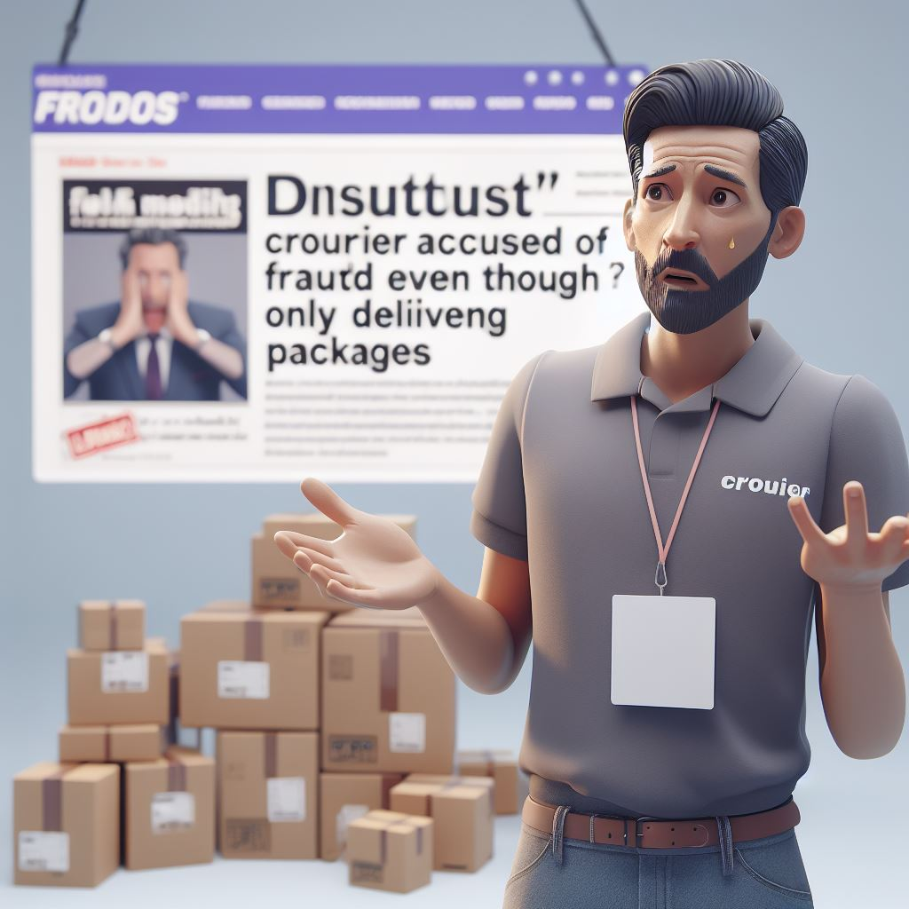
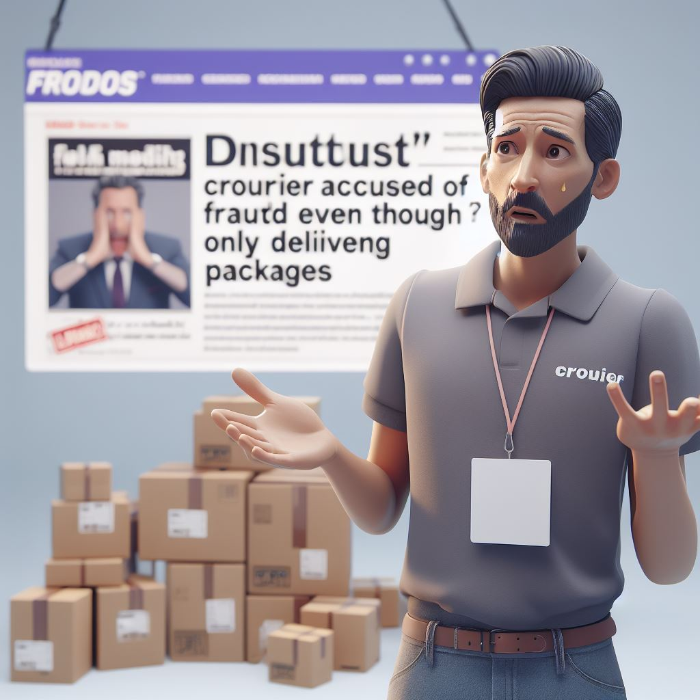

Kekeliruan Pemberitaan Media, Kurir Dituduh Terlibat Penipuan Padahal Hanya Pengantar Paket
 



Kekeliruan Pemberitaan Media, Kurir Dituduh Terlibat Penipuan Padahal Hanya Pengantar Paket
Sebuah masalah muncul ketika seorang pengantar yang baik-baik saja dituduh terlibat dalam kasus penipuan hanya karena dia mengantarkan barang. Kejadian ini membuat kita bertanya-tanya tentang kebenaran dan sikap baik dalam berita.
Seorang pengantar yang bekerja dengan perusahaan pengiriman terkenal disebut-sebut secara salah sebagai orang yang melakukan penipuan yang serius. Pada dasarnya, tugasnya hanya membawa paket kepada orang yang tidak tahu apa-apa tentang isinya.
Hal ini terjadi ketika seseorang dituduh melakukan penipuan dengan menggunakan jasa pengiriman untuk menyampaikan barang-barang yang tidak boleh. Tapi, dalam berita yang salah, pengantar yang tidak bersalah disebut sebagai "orang utama" tanpa memahami bahwa dia hanya melakukan pekerjaannya sesuai perintah.
Berita yang terlalu cepat memberikan judul yang dramatis membuat orang bingung, dan membuat pengantar yang tidak bersalah ini dianggap buruk tanpa alasan yang adil.
Wawancara dengan orang yang berwenang dan perusahaan pengiriman menunjukkan bahwa pengantar itu bahkan tidak tahu apa yang ada di dalam paket yang dia bawa, dan dia hanya melakukan apa yang diinstruksikan. Berita yang salah ini tidak hanya merugikan nama baik orang itu, tapi juga membuat orang tidak percaya pada perusahaan pengiriman secara keseluruhan.
Kejadian ini mengingatkan kita bahwa media harus berhati-hati dan pastikan informasinya benar sebelum memberitahukannya kepada semua orang. Berita yang tidak hati-hati bisa merugikan orang dan membuat masyarakat tidak percaya pada media sebagai sumber informasi.